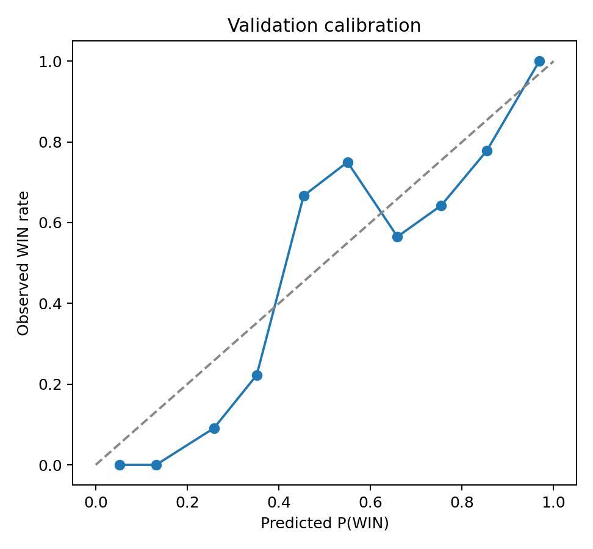
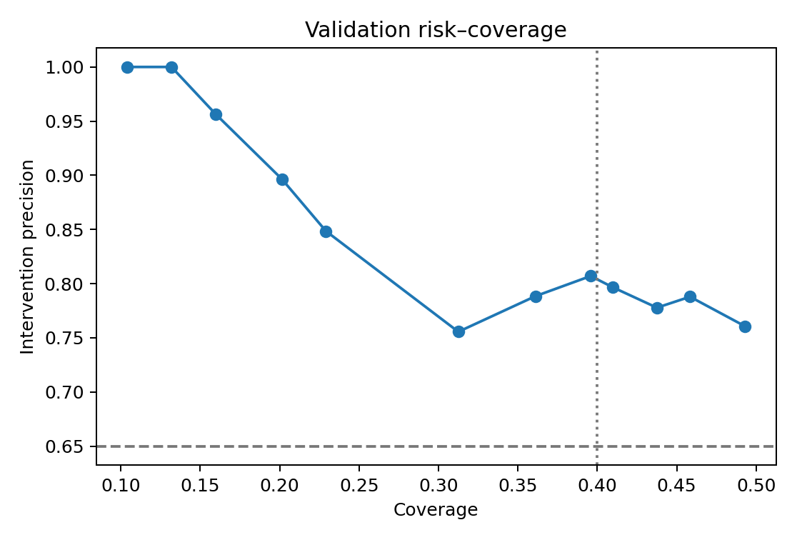
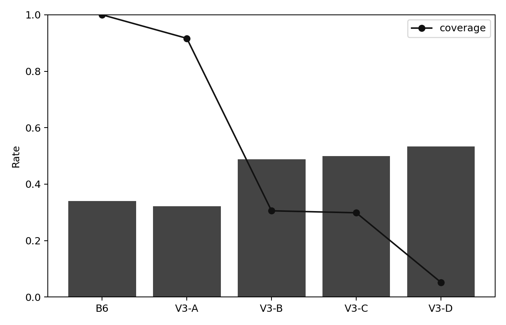
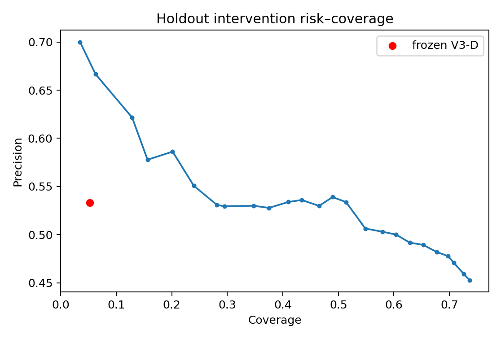
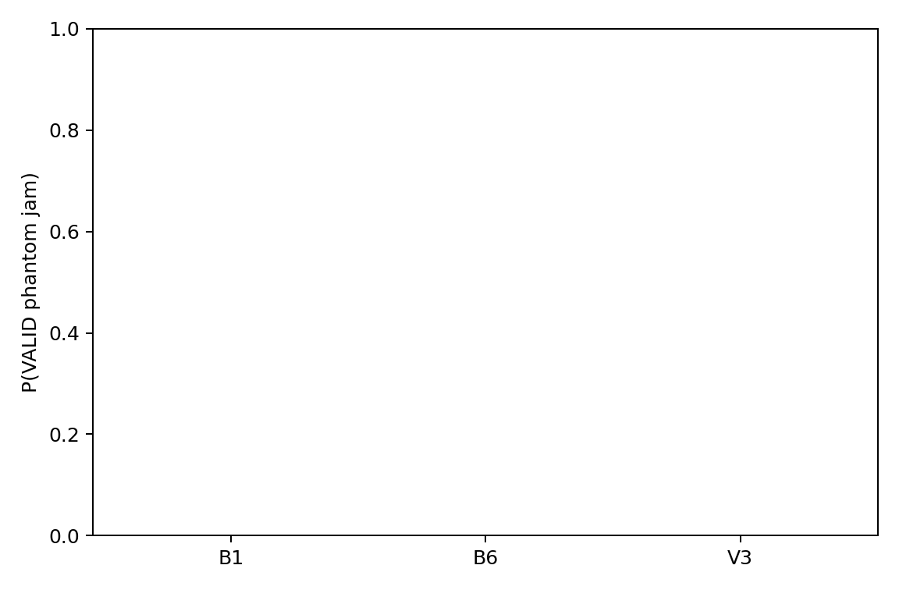
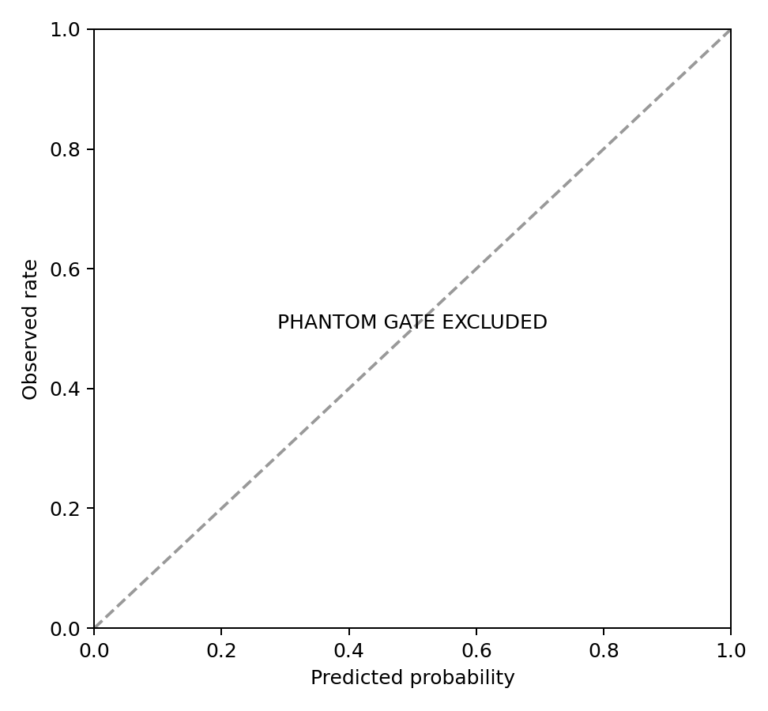
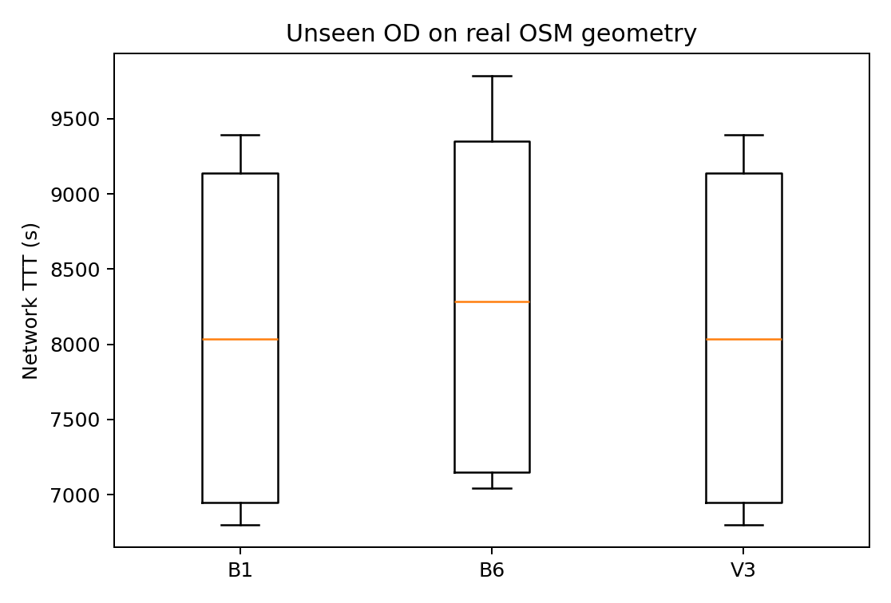
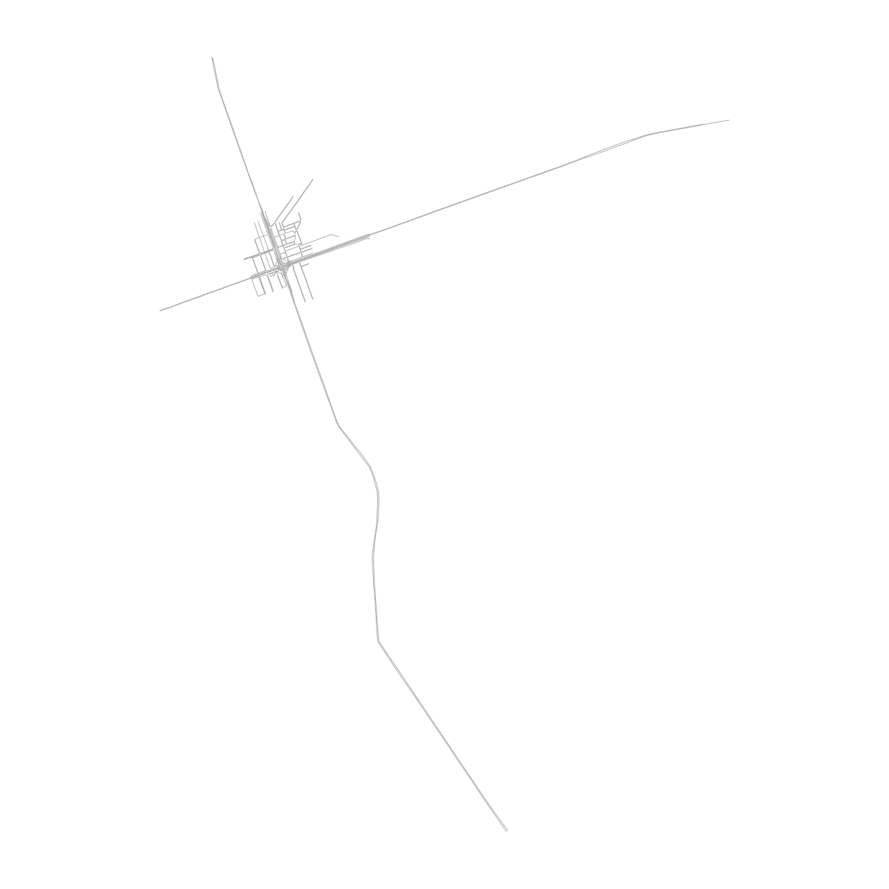
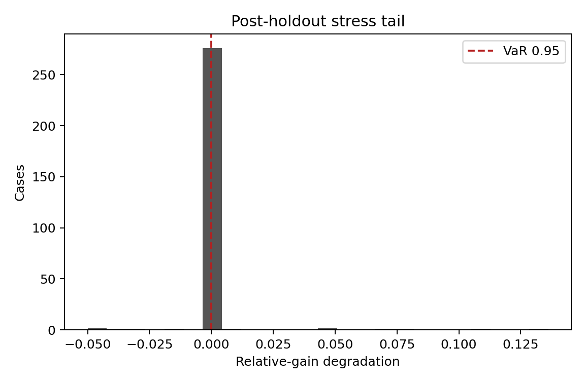

Know when optimization is worth attempting. Predict feasibility, intervene selectively, enforce a safety hard gate, and fall back to ETA navigation under uncertainty.
Claim boundary. The primary result is an untouched synthetic analytical holdout. Microscopic tests use actual SUMO with synthetic demand. The real-topology test uses committed OSM geometry with an unseen synthetic OD. TTC, PET, and DRAC are surrogate conflict indicators—not crash probabilities.
v2 showed that adaptive navigation can reverse direction across topology and preference conditions. The original H1, H2, H3, H4, and H6 failures remain intact: retained. v3 therefore does not claim a better universal optimizer. It turns alignment feasibility into a prediction-and-abstention problem.
The system estimates Alignment Potential, route overlap, alternative capacity, preference diversity, Route Attribute Dispersion, acceptance, predicted benefit, uncertainty, and safety margin. Only cases that pass every frozen gate receive B6; all others use B1 unchanged.
Precision 95% Wilson CI: [30.1%, 75.2%]. Engineering success requires point precision ≥65%; strong scientific evidence separately requires the lower 95% bound to exceed 50%. Abstentions are neither counted as successes nor failures.
| Policy | Precision | Coverage | Mean TTT gain |
|---|---|---|---|
| A0_no_gate | 34.0% | 100.0% | 96.3000 |
| A1_APS_only | 32.2% | 91.7% | 32.2921 |
| A2_topology_only | 26.9% | 75.0% | -104.0434 |
| A3_preference_only | 34.0% | 100.0% | 96.3000 |
| A4_APS_topology | 25.0% | 68.1% | -135.4942 |
| A5_learned | 48.9% | 30.6% | 123.2694 |
| A6_learned_safety | 50.0% | 29.9% | 122.8126 |
| A7_full_v3 | 53.3% | 5.2% | 39.9296 |
H8 scientific criterion: FAIL. H9 failure reduction vs always-on: PASS. H10 mean-cost non-inferiority: PASS.
| Feature | Selected-model importance |
|---|---|
| heterogeneity_rad_interaction | 0.93838 |
| maximum_single_benefit | 0.80641 |
| safety_margin | 0.79610 |
| route_attribute_diversity | 0.76765 |
| alternative_capacity_ratio | 0.70417 |
| price_of_anarchy | 0.54492 |
| bottleneck_centrality | 0.53552 |
| phantom_risk | 0.51813 |
| acceptance_probability | 0.44547 |
| alignment_opportunity_count | 0.37389 |
On holdout, route-overlap/WIN correlation was 0.262; preference-diversity × route-attribute-diversity correlation was 0.204. These are descriptive synthetic associations, not causal estimates.
21 B1 SUMO runs searched the metastable demand range before selective testing. Phantom calibration was incomplete; its separate gate was excluded. In the selective matrix, B6 had 6 safety failures and v3 had 0.
The evaluation OD ['cluster_12061673697_12061673699_4944067989', '5376448907'] differs from the development OD. 3 passenger-legal routes were tested on the committed Gangnam OSM extract. V3 precision was 0.0%, coverage 0.0%, and mean TTT gain 0.000s. This is mechanism-transfer evidence under synthetic demand, not a Seoul traffic-effect estimate.
With demand ×1.15 and preference-variance input ×1.30, mean stressed TTT gain was 21.8708. The 95% degradation CVaR was 0.0017 against a frozen 0.1000 limit. Threshold checksums remained unchanged.









Always-on Adaptive Navigation: rejected as universal policy.
Selective Adaptive Navigation: Outcome P. Selective CONCORDIA partially supported.
RL remains rejected and is not part of the v3 policy.